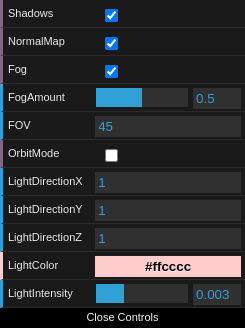
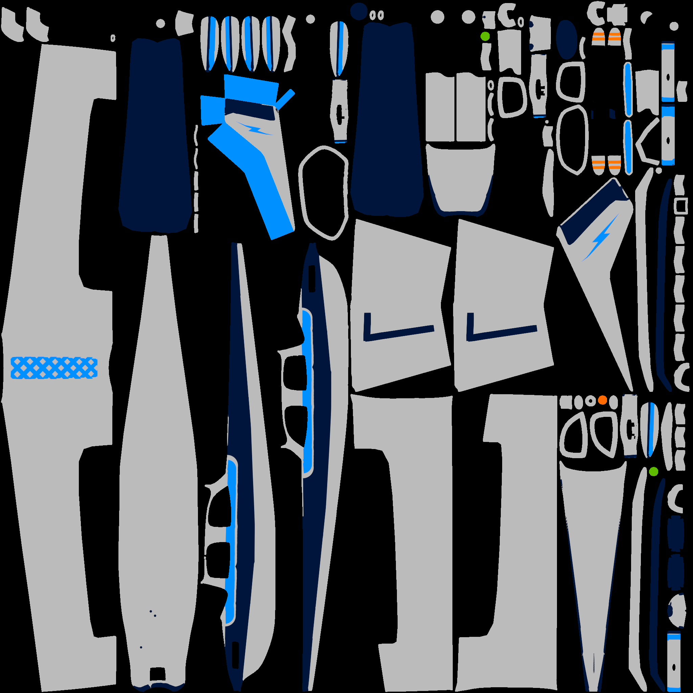
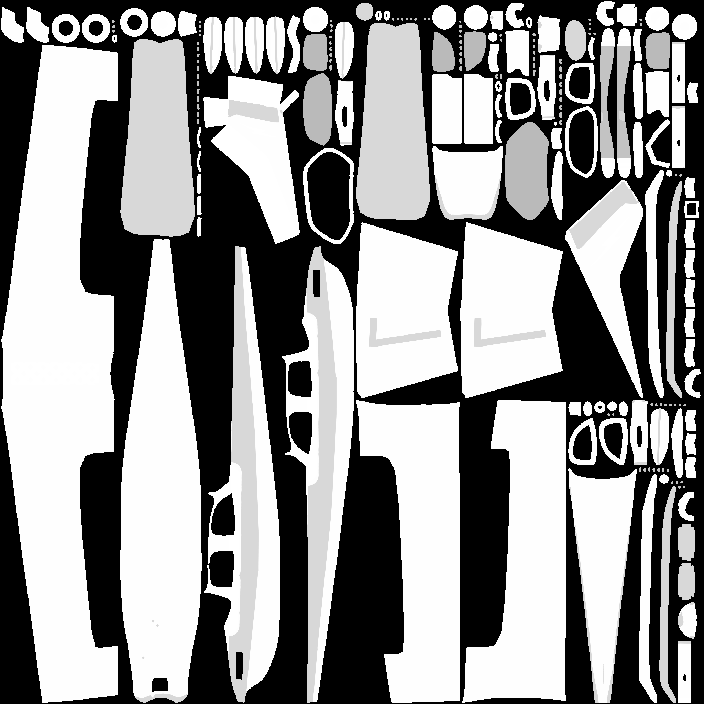
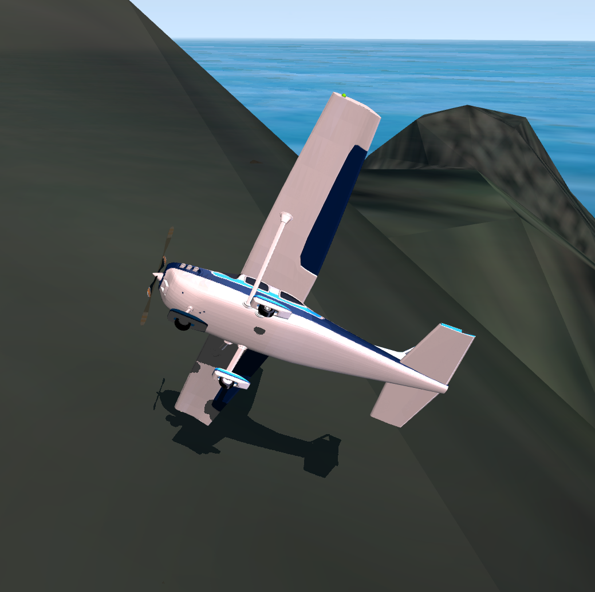
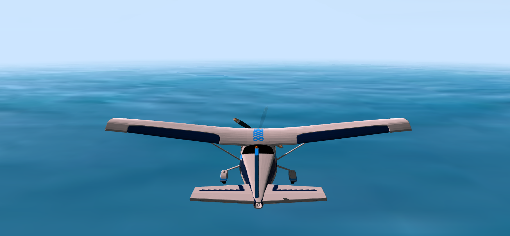

The purpose of this project is to develop an interactive 3D-app using HTML5, CSS and WebGL.
My choice of app is a 3D flight game, where the player controls an airplane flying over an
island in the ocean. The player is able to control the airplane's roll, pitch and speed, and
there are several provided controls to change parameters of the environment like fog, lighting
and camera. An in-game image is shown below.
Figure 1: Image captured in-game
The application has been tested both on Linux and Windows with the browsers Firefox and Chrome.
In addition, some touch controls are provided on mobile platforms to control the plane.
The Classes
The project has several classes to abstract away common functionality to avoid code
duplication. The main classes are:
Mesh
Texture
Model
Actor
Airplane
Camera
Skybox
ShadowMap
Scene
Mesh
The meshes are handled in the class Mesh in mesh.js.
All of the meshes are loaded from an OBJ file using the glm_utils.js library provided
during class. The mesh data is then processed including vertex positions, texture coordinates,
normals, tangents and bitangents. Each of these are contained in a separate WebGL buffer, and
the data is uploaded using gl.bufferData for each buffer. The meshes are drawn
in the draw() function of the Mesh class, using
gl.vertexAttribArray and gl.vertexAttribPointer to specify where the
vertex data should go and of which format it is for the vertex shader. The function ends with a
gl.drawArrays call to draw the vertices of the mesh.
Texture
The Texture class in texture.js contains the code for
loading a texture from an image file. Upon construction a WebGL texture is created and initially
set to black using gl.texImage2D, before loading the image and specifying that as
the texture and generating mipmaps.
Model
The Model class in mesh.js binds together a single mesh
with several textures. Each Model has a diffuse, specular and
normal texture. The effects of these are further discussed in the "Lighting and Advanced Rendering"
section.
Actor
The Actor class in mesh.js is the main class for objects
in the scene, and can contain a model or not. The class contains a transform field,
which is used to transform the object from object space to world space and is the model
matrix of the vertex shader. In addition the actor class provides possibility for a hierarchy, where
each level of the hierarchy tree applies its transform.
Airplane
The Airplane class in airplane.js is the class containing
the airplane logic. It contains two actors; the plane and the propeller, where the propeller is a
child of the plane in the actor hierarchy. Each tick the plane transform is updated with regards to
user input (further discussed in "Controls and Input") and its speed, and the propeller is rotated
with regards to the speed.
Camera
The Camera class in camera.js extends the
Actor class and contains the camera logic. The
camera instance is a child of the plane actor as to follow the plane. The class
has functions for calculating the view and projection
matrices, where view is calculated from the inverse of the camera
transform and projection is calculated using the m4.js library
perspective projection function.
Scene
The Scene class in scene.js contains the code
for updating and rendering all the actors in the scene, also updating the common uniforms
among all objects such as light position and camera matrices.
Controls and User Input
The application has input controls for controlling various aspects of the application. The
airplane can be controlled using the WASD keys, where W and S controls the pitch, and A and D
the roll. This is done by checking for keys pressed each tick and updating the rotation of the
airplane actor accordingly (update function of airplane.js). There is an amortization
constant multiplied with the speed when no input is provided to make the rotation come to a stop smoothly
and not instantly. On mobile an alternative input scheme is provided, where touching the sides of the
screen rotates the plane in that direction (right and left sides control roll and up and down pitch).
This is implemented in the touch* functions in main.js The + and - keys can be used
to control the airplane speed, where the airplane is translated along is direction depending on the speed.
In addition, the camera angle can be adjusted according to pre-defined presets by pressing the C key,
changing the camera transform matrix.
The application also contains a GUI for adjusting various aspects of the environment as seen in Figure 2.
This includes light parameters as well as toggling the advanced rendering techniques. In addition there
is a "Orbit Mode" toggle that, upon toggling, changes the input scheme. When enabled, the mouse (or touch on mobile)
controls the camera in an orbit fashion around the world Y axis, with the airplane as the orbit center. While in orbit
mode, the camera view matrix is calculated from an angle and distance (viewMatrix() in camera.js)
instead of the camera transform to make the orbit calculation simpler.

Figure 2: The GUI controls.
Lighting and Advanced Rendering
The scene contains a single directional light for lighting the scene in addition to using environment mapping
with a skybox for the specular component. In addition some more advanced rendering techniques have been
implemented incluing shadows, normal mapping and fog. The main object lighting calculation is done in the
fragment-shader script in index.html, being a GLSL shader.
Directional Lighting
The directional light has a direction, color and intensity controllable from the GUI. The direction is given
as the direction from the origin to the lighting instead of the other way around since this vector is used for
the diffuse calculation. For each object, the lighting calculation is based on the Phong model, having an ambient,
diffuse and specular component. The color of the object is taken from its diffuse texture map. This is multiplied
by a constant to provide the ambient component. For the diffuse component, the color is multiplied by the dot product
between the light direction and the surface normal, since larger angles should give lower diffuse (and maxed with 0
to avoid negative values). This is then multiplied by the light color and intensity.

Figure 3: The airplane diffuse texture.
For the specular component, the specular texture is used for the object value instead of the diffuse texture,
where the specular texture is a grayscale texture where higher values means higher specular and lower values lower
specular. This means the specular can vary on an object, giving a better result on objects with many "materials" such as
the airplane (glass, metal, paint). The specular component is calculated by multiplying by the dot product between the
surface viewing direction and the surface light reflection direction, since when these two vectors coincide the specular
highlight should be higher. By raising this value to a power the size of the specular highlight can be changed (where higher
values give smaller highlights and make the object look "shinier"). For this project the dot product is raised to the constant
power of 16, since textures are used instead of for example OBJ materials. The specular is then multiplied by light color
and intensity, in addition to a reflection component based on skybox environment mapping.

Figure 4: The airplane specular texture.
Skybox and Environment Mapping
The scene contains a skybox drawn from a cubemap texture containing 6
different textures as shown in figure 5, where each texture corresponds
to a different face direction. The cubemap texture is set up in the
Skybox class in texture.js. In
the #init() function all the 6 texture images are
loaded and stored as the correct cubemap texture using gl.texImage2D
and mipmaps are generated. Following this, a vertex buffer containing the
positions of a quad filling the whole canvas is set up to draw the cubemap
onto.
Figure 5: The cubemap textures.
The skybox is drawn in the draw() function of the
Skybox class. This uses the shaders
skybox-vs and skybox-fs from index.html.
The depth function is set to gl.LEQUAL before drawing since
the Z values of the quad vertices are all set to 1.0 (as to draw them
behind everything else). The inverse of the projection * view
matrix with 0 translation is sent to the fragment shader as a uniform.
This matrix is then used to sample from the cubemap, by multiplying it
with the fragment position to go from screen space to world space (since
fragment positions are in screen space).
In addition to drawing the skybox, the cubemap texture is used for
environment mapping. In the main fragment shader fragment-shader
used for the objects, the specular component has a term consisting of the
cubemap sample from the reflection of the viewing direction along the normal,
creating a reflection effect.
Shadows
The airplane model of the scene is the only objects that casts shadows.
The reasoning behind this is that the scene is very large, and that the
camera always follows the airplane. Because the scene is large, either multiplie
shadow maps or a very high resolution one would have to be used to cast
shadows on the whole scene with decent results. Instead, since there is only
a single directional light, the position of the "light camera" creating the
shadow map is calculated by going in the light direction from the airplane position
(see update() in scene.js).
The shadow map is created in the #init() function in the
ShadowMap class in texture.js.
This creates a separate framebuffer and sets up a depth texture which the
uses as a depth attachment, such that when the framebuffer is drawn to, the
depth component is stored to the texture.
When drawing the scene in the draw() function in scene.js,
the scene is drawn twice, the first being to the shadow map. During the shadow
map draw call, the culling is set to the front faces to minimize the offset created
by the bias (which is discussed in the following paragraph). The draw call uses
separate shaders, shadow-vs and shadow-fs, where the
fragment shader is just used to avoid warnings (since only depth component is
of interest). The vertex shader contains the lightSpaceMatrix uniform
which transforms from world space to the light space using an orthographic projection
(being a directional light).

Figure 6: The airplane with its shadow.
During the second draw call that actually draws the objects, the shadow map depth
texture is used (assuming shadows are enabled). In the fragment-shader
shader, this texture is used to calculate whether a fragment is in shadow in the
shadow() function. This checks whether the depth of the
fragment from the shadow map (which is either the fragment depth or a blocking
fragments depth) is less than the current fragment depth. If it is, the fragment
is in shadow and 0.0 is returned. A very small bias is added to avoid black lines
as a result of multiple fragments sampling the same shadow map value. This has
the small disadvantage of offseting the shadow by a small amount.
Normal Mapping
In addition to the diffuse and specular textures, each object also has a
normal map texture. This texture provides the normal for the fragments,
where r, g and b correspond to x, y, z of the normal vector. However, since
this normal is relative to the normal of the face, it has to be transformed
from the tangent space of the face to world space. This is done through the
TBN matrix, consisting of a normal, tangent and bitangent vector, that are
perpendicular and form a basis for the tangent space. The normal is provided
by the glmUtils.js library, however the tangent and bitangent are
calculated in the #initMesh() function of Mesh.
Once these are calculated, the TBN matrix can be calculated in the vertex shader by providing
the unit vectors as colums of the matrix. In the fragment shader, the normal can then be
calculated by sampling from the normal map and then multipying by the TBN matrix to provide
the correct normal in world space. The normal is multiplied by 2 and subtracted 1 since
the normalMap is in [0, 1] while the normal vector should be in [-1, 1].
Figure 7: The landscape normal map.
Fog
The fog effect is created by mixing the fragment color with a fog color based on
the distance to the fragment. For the mesh objects, this is done in fragment-shader
using the smoothstep function to interpolate between two values based on the distance.
Since the skybox is not a mesh but still needs a fog effect for the fog to look convincing, the
skybox-fs shader mixes the fog color based on the Y-coordinate of the inverted
projection * view matrix such that the fog is stronger when Y is closer to 0.

Figure 8: High fog amount makes landscape invisble.
Model/Texture Sources
The models and textures used are sourced from various sites online, where some have been slightly
modified by for example adjusting the levels on textures. In addition, the airplane was originally
a single mesh. but was separated using Blender.